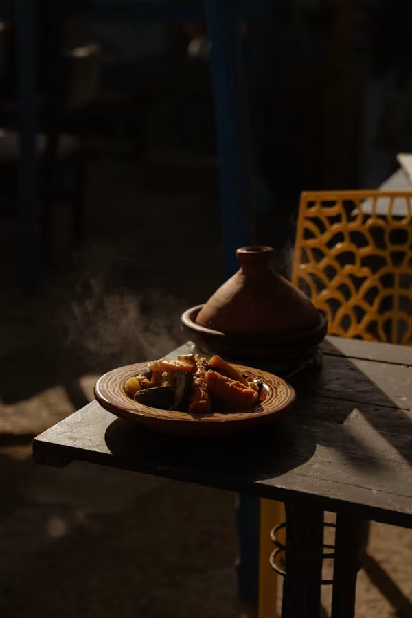

Rwanda · East Africa
Isombe
Pounded cassava leaves simmered with peanut paste, eggplant and palm oil.
Ethiopia · East Africa
A soft, spongy sourdough flatbread made from teff flour. In Ethiopia and Eritrea it is the plate, the spoon and the bread all at once.

The story
Teff is a tiny grain that was domesticated in the Ethiopian highlands thousands of years ago. It is naturally gluten-free and rich in iron, and its wild yeasts give injera batter its pleasant sour taste.
The batter ferments for two to three days, then is poured onto a wide clay griddle called a mitad. It cooks on one side only, and bubbles rising through the batter leave the tiny holes, or “eyes”, on top.
Injera is spread over a shared platter and topped with stews (wats) spiced with berbere, lentils, greens and niter kibbeh, a spiced butter. Diners tear off pieces with the right hand to scoop up food, and feeding a friend by hand, called gursha, is a sign of affection.
You will need
Step by step
Per serving
| Nutrient | Amount |
|---|---|
| Calories | 280 kcal |
| Carbohydrates | 56 g |
| Protein | 10 g |
| Fat | 2 g |
| Fiber | 6 g |
| Iron | 5.7 mg |
Estimates based on the ingredients above; values change with brands and portion size.
Watch & learn
The Stay At Home Chef shows each stage of making injera at home, from fermenting the teff batter to cooking it in a regular pan.
Keep cooking
Rwanda · East Africa
Pounded cassava leaves simmered with peanut paste, eggplant and palm oil.

Morocco · North Africa
Slow-braised lamb with apricots, ras el hanout and preserved lemon, cooked in a cone-lidded clay pot.